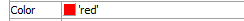
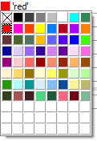
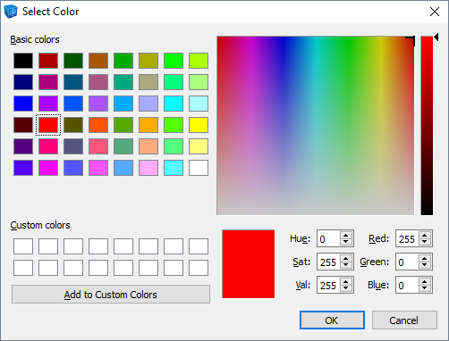

Color
Set item color.
Color: set a color using the swatch control. The color name (if available) or RGB value (if not) is shown to the right of the swatch.
About the Palette Control
Clicking on the swatch control opens the color palette. Sixty-four fixed colors are provided on the palette. The top left position of the palette is “none”, indicated by an “x”. Setting an item to this color has the effect of making it invisible. The currently selected color is indicated by a dashed border around the swatch of that color. The palette also offers, at bottom, three rows (an additional 24 positions) of undefined colors. Until supplied a custom color, these swatches appear white; selecting one of them while still undefined will be taken as an assignment to “white” on the top row.
Right-clicking on any swatche on the palette opens a dialog that allows a new color to be defined.
Color definition is not limited to the swatches in the custom positions; existing colors within the set of 64 pre-defined colors can be re-defined as well. All (re)definitions of colors within the palette are permanent.
Note
When assigning colors automatically, the program is limited to the first 64 colors as shown on the palette. If more than 64 colors are needed, the initial 64 colors are cycled until all color assignments are complete; the last 24 “custom” colors are not included in any automatic coloring done by the program.
| Was this helpful? ... | UDEC © 2018, Itasca | Updated: Mar 15, 2024 |